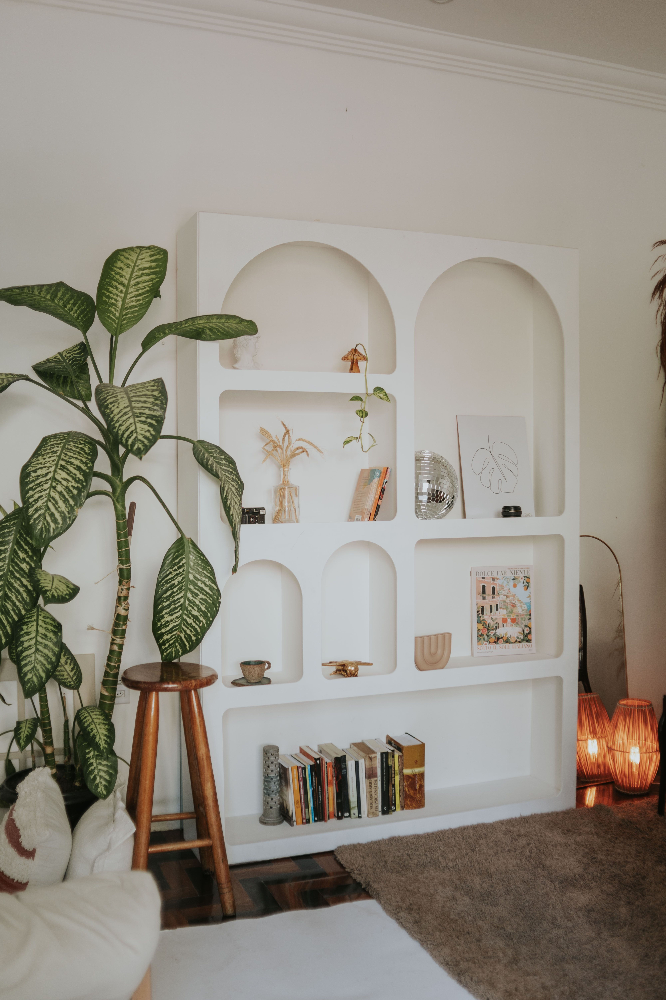
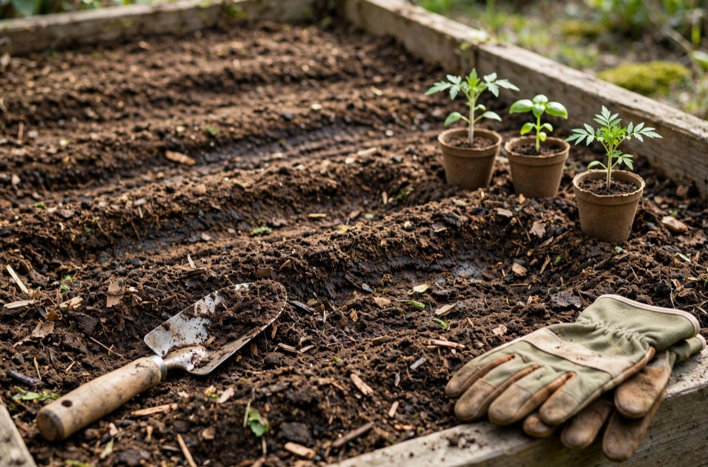

En este artículo
Introducción
Qué hacer con las hojas secas del jardín: guía práctica con recomendaciones claras para elegir, cuidar y mantener mejores soluciones en casa y jardín.
La mejor forma de abordar este tema es partir de las condiciones reales del hogar y no de una solución genérica. La luz, el clima, el espacio disponible, la frecuencia de uso y el tiempo que podemos dedicar al mantenimiento cambian por completo qué opción resulta adecuada.
Esta guía desarrolla criterios prácticos para tomar decisiones con más seguridad. Además de explicar qué hacer, señala errores frecuentes y tareas de mantenimiento que ayudan a conservar el resultado. El objetivo es que la información pueda aplicarse de manera gradual, sin compras impulsivas ni intervenciones innecesarias.
Cuando una recomendación dependa de una especie, producto o condición concreta, revisa siempre las instrucciones específicas. En tareas que impliquen riesgos o conocimientos técnicos, la ayuda de un profesional cualificado es preferible a improvisar.
Cuándo recoger las hojas y cuándo dejarlas
No todas las hojas caídas deben retirarse inmediatamente. En zonas de suelo desnudo, bajo arbustos o en áreas naturalizadas, una capa moderada puede proteger el terreno y ofrecer refugio a pequeños organismos. Sin embargo, una acumulación espesa sobre césped puede bloquear luz y aire, mantener humedad excesiva y perjudicar la superficie vegetal.
Retira hojas de caminos, escaleras y pavimentos donde puedan volverse resbaladizas. También conviene despejar desagües y rejillas antes de lluvias intensas. Cerca de plantas sensibles, observa si la capa está compactándose o favoreciendo enfermedades.
La gestión ideal divide el jardín por zonas. No hace falta aplicar la misma regla a un césped, un macizo de arbustos y un sendero. Recoger selectivamente reduce trabajo y permite aprovechar parte del material orgánico en el propio jardín.
Planificar antes de actuar evita la mayoría de los problemas. Observa las condiciones durante varios días, anota cambios de luz, humedad o uso y decide qué resultado buscas. Esta información permite elegir especies, materiales y rutinas compatibles con el espacio real en lugar de copiar una solución que funcionó en otro hogar.
Trabaja de forma gradual. Introducir pocos cambios y observar su efecto permite corregir a tiempo sin gastar de más. En jardinería y plantas de interior, una modificación puede tardar días o semanas en mostrar resultados, por lo que conviene evitar varias intervenciones simultáneas.
Triturar hojas para utilizarlas como acolchado
Las hojas enteras pueden formar capas compactas, especialmente cuando son grandes y húmedas. Pasarlas por una trituradora de jardín o cortarlas con herramientas adecuadas reduce su volumen y ayuda a que se descompongan con mayor rapidez. Utiliza siempre equipos siguiendo las instrucciones del fabricante y protege manos y ojos.

El material triturado puede distribuirse como acolchado alrededor de árboles, arbustos y macizos. Deja un pequeño espacio libre alrededor de troncos y tallos para evitar acumulaciones húmedas directamente sobre los tejidos. Una capa moderada ayuda a reducir evaporación y, con el tiempo, aporta materia orgánica.
No utilices hojas con síntomas claros de enfermedades graves sin conocer el manejo recomendado para ese problema. En ciertos casos es preferible retirarlas del ciclo de compostaje doméstico para disminuir la posibilidad de conservar patógenos.
Trabaja de forma gradual. Introducir pocos cambios y observar su efecto permite corregir a tiempo sin gastar de más. En jardinería y plantas de interior, una modificación puede tardar días o semanas en mostrar resultados, por lo que conviene evitar varias intervenciones simultáneas.
La limpieza forma parte del mantenimiento. Herramientas limpias, recipientes sin agua estancada y superficies despejadas reducen problemas y facilitan detectar señales tempranas. No hace falta utilizar productos agresivos cuando una limpieza sencilla y regular es suficiente.
Preparar compost con hojas secas
Las hojas secas son un material rico en carbono y pueden equilibrar restos verdes de cocina y jardín en una compostera. Mezcla ambos tipos de material para evitar una masa demasiado húmeda o compacta. Trocear las hojas acelera el proceso y facilita una distribución uniforme.
El compost necesita humedad semejante a una esponja escurrida y suficiente aire. Si está empapado y huele mal, añade material seco y mejora aireación; si permanece completamente seco, la descomposición será muy lenta. Remover periódicamente puede ayudar, según el sistema utilizado.
Evita incorporar residuos tratados con sustancias incompatibles, plantas invasoras con semillas viables o material enfermo cuando no estés seguro de que el proceso alcanzará condiciones adecuadas. Consulta las recomendaciones locales para residuos verdes cuando sea necesario.
La limpieza forma parte del mantenimiento. Herramientas limpias, recipientes sin agua estancada y superficies despejadas reducen problemas y facilitan detectar señales tempranas. No hace falta utilizar productos agresivos cuando una limpieza sencilla y regular es suficiente.
La seguridad debe mantenerse por encima de la estética. Asegura macetas, estanterías y soportes; evita obstáculos en zonas de paso y utiliza herramientas conforme a sus instrucciones. Cuando exista riesgo eléctrico, estructural, trabajo en altura o una situación que exceda una tarea doméstica normal, recurre a profesionales.
Crear mantillo de hojas o reservarlas para otros usos
Una pila formada principalmente por hojas puede transformarse lentamente en mantillo de hojas, un material oscuro útil para mejorar estructura del suelo. El proceso suele ser más lento que un compost equilibrado y requiere paciencia. Mantén la pila contenida, ligeramente húmeda y con cierta ventilación.

También puedes guardar una cantidad de hojas secas en un recipiente ventilado para añadirlas a la compostera durante meses en los que abundan restos verdes. Esta reserva ayuda a mantener un mejor equilibrio sin comprar materiales adicionales.
En jardines con fauna, algunas zonas discretas con hojas pueden ofrecer refugio. Evita, no obstante, crear montones pegados a la vivienda, salidas o instalaciones donde puedan causar humedad, obstrucciones o riesgos de incendio en climas secos.
La seguridad debe mantenerse por encima de la estética. Asegura macetas, estanterías y soportes; evita obstáculos en zonas de paso y utiliza herramientas conforme a sus instrucciones. Cuando exista riesgo eléctrico, estructural, trabajo en altura o una situación que exceda una tarea doméstica normal, recurre a profesionales.
Una solución sostenible es aquella que puedes mantener. Calcula cuánto tiempo requiere el cuidado semanal y evita crear una rutina demasiado compleja. Menos elementos bien atendidos suelen ofrecer un resultado más atractivo que una colección grande que empieza a deteriorarse.
Organizar una rutina de limpieza de otoño eficiente
En vez de esperar a que todo el jardín quede cubierto, realiza recogidas ligeras durante el periodo de caída. Trabajar con hojas relativamente secas es más sencillo que mover grandes masas mojadas. Utiliza rastrillos adecuados y recipientes reutilizables para trasladar el material.
Clasifica mientras recoges: hojas limpias para triturar o compostar, material dudoso para gestionar por separado y residuos no vegetales para su contenedor correspondiente. Esta separación evita contaminar el compost y ahorra una segunda revisión.
Al terminar la temporada, limpia herramientas y comprueba desagües. La meta no es dejar el jardín sin una sola hoja, sino mantener seguras las zonas de paso, proteger el césped y aprovechar de forma responsable un recurso orgánico que puede volver al suelo.
Una solución sostenible es aquella que puedes mantener. Calcula cuánto tiempo requiere el cuidado semanal y evita crear una rutina demasiado compleja. Menos elementos bien atendidos suelen ofrecer un resultado más atractivo que una colección grande que empieza a deteriorarse.
Revisa el resultado unas semanas después. Comprueba qué ha funcionado, qué tarea se repite demasiado y dónde aparece una dificultad inesperada. Ajustar el sistema a partir de la experiencia real es más eficaz que perseguir una configuración perfecta desde el primer día.
Revisión práctica y mantenimiento a largo plazo
Después de aplicar los cambios, observa el resultado durante varias semanas. Comprueba si la rutina es realmente cómoda, si el espacio sigue funcionando y si aparecen señales que indiquen exceso de agua, falta de luz, humedad, desgaste o cualquier otro problema relacionado con el tema. Una revisión temprana permite corregir detalles pequeños antes de que exijan una intervención mayor.
Mantén un registro sencillo cuando sea útil. Anotar fechas de siembra, trasplante, limpieza profunda, aplicación de un producto o cambio de ubicación facilita entender la evolución. No es necesario convertir el cuidado de la casa en una tarea burocrática; unas pocas notas pueden evitar repetir errores.
Prioriza el mantenimiento preventivo. Limpiar, revisar fijaciones, retirar material deteriorado y comprobar drenajes suele requerir pocos minutos y prolonga la vida de plantas, muebles y espacios. Esperar a que el problema sea evidente normalmente aumenta el trabajo.
Finalmente, conserva solo las rutinas que aporten un beneficio claro. Si una solución exige demasiado tiempo para el resultado que ofrece, simplifícala. Un hogar agradable y un jardín saludable deben adaptarse a la vida cotidiana y no convertirse en una fuente constante de tareas.
Consejos adicionales para conseguir un resultado consistente
Antes de añadir una nueva tarea a tu rutina, pregúntate qué problema resuelve. Esta sencilla comprobación ayuda a evitar cuidados excesivos, compras duplicadas y cambios realizados únicamente por costumbre. Una acción pequeña y bien justificada suele ser más útil que muchas intervenciones sin un objetivo claro.
Observa también cómo cambia el entorno con las estaciones. Temperatura, horas de luz, ventilación y humedad pueden modificar las necesidades de plantas y materiales. Lo que funcionó durante meses cálidos quizá necesite ajustes cuando llegan días más fríos o con menos luz.
Cuando pruebes una solución nueva, aplícala primero a pequeña escala. Esto permite comprobar su efecto antes de extenderla al resto del espacio. Si el resultado es positivo, podrás repetirla con mayor confianza; si no funciona, corregirla será más sencillo.
La constancia supera a las acciones intensivas y esporádicas. Revisiones breves y regulares permiten mantener orden, detectar cambios y actuar pronto. Este principio reduce el esfuerzo acumulado y ayuda a conservar un aspecto cuidado durante más tiempo.
Por último, evita comparar tu casa o jardín con imágenes preparadas exclusivamente para fotografía. Un espacio real debe permitir movimiento, limpieza, crecimiento y uso cotidiano. La mejor solución es la que sigue funcionando cuando termina la sesión de fotos y comienza la vida diaria.
Preguntas frecuentes
¿Cuál es la mejor manera de empezar?
Empieza observando las condiciones reales relacionadas con qué hacer con las hojas secas del jardín, define una prioridad y evita comprar o modificar elementos antes de conocer el espacio.
¿Cuánto tiempo se necesita para ver resultados?
Depende del tema y de las condiciones. Algunas mejoras son inmediatas, mientras que el crecimiento de las plantas, el compostaje o la adaptación a una nueva rutina requieren semanas o meses.
¿Qué errores deberían evitarse?
Evita aplicar la misma solución a todas las situaciones, excederte con agua o productos, ignorar drenaje y seguridad, y realizar cambios simultáneos que impidan saber qué está funcionando.
¿Es necesario gastar mucho dinero?
No necesariamente. Observar, reutilizar recursos, elegir bien desde el principio y mantener de forma preventiva suele reducir gastos y evita compras innecesarias.
¿Cuándo conviene pedir ayuda profesional?
Cuando haya riesgos eléctricos, estructurales, trabajos en altura, problemas importantes de plagas o cualquier situación que no pueda resolverse con seguridad mediante mantenimiento doméstico normal.
Conclusión
Qué hacer con las hojas secas del jardín puede abordarse con mejores resultados cuando primero se observan las condiciones, después se eligen soluciones compatibles y finalmente se establece una rutina de mantenimiento sencilla.
No es necesario transformar todo de una vez. Los cambios graduales permiten aprender del espacio, controlar gastos y detectar qué decisiones funcionan de verdad. Esta estrategia resulta especialmente útil cuando intervienen plantas y materiales vivos, cuyo comportamiento cambia con el tiempo.
Utiliza esta guía como referencia, adapta cada recomendación a tu situación y revisa periódicamente el resultado. La combinación de planificación, observación y mantenimiento suele ser más eficaz que cualquier solución rápida.